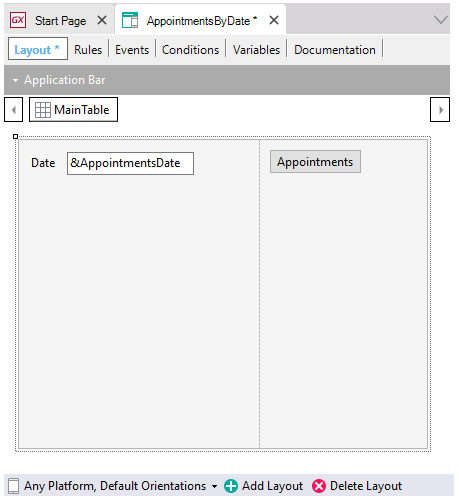
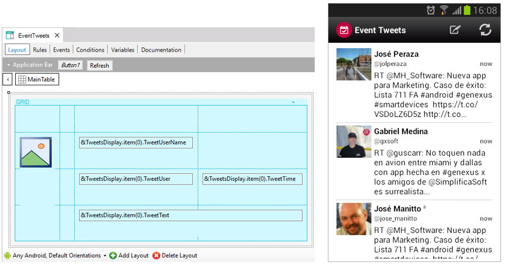

Defines a UI screen, no matter whether it is for Native Mobile, Web, TV, or a Watch. It shows and/or requests data through flexible abstract Layouts. User and system actions are defined through Events.
This object provides all the freedom to design the layout without pre-established structuring. The layout is empty, ready to be completed. You have to implement everything from scratch.
Through this object, you can show data to the user, ask the user for data, and make appealing and flexible layouts. It is very useful for creating more-complex user information interaction screens, creating wizards, showing messages, creating another kind of menus (different from the Menu object and more flexible), showing data obtained from other sources (e.g. Data Provider objects).
It is analogous to a Web Panel object (and to any section in a Work With for Smart Devices object empty initialized). That is to say, it implements a single screen that starts empty, with no definition, so you have the absolute freedom to put and remove what you want, and load the data from the database or anywhere else.
Suppose you need to define a Panel to ask the user for a date and invoke another Panel that shows all the appointments for that day. To do so, you have to define a variable &AppointmentDate based on the Date data type, incorporate it in the layout, and insert a button in the Layout with an associated event defined in the Events section.

This Panel does not have a Base Table, but you could design Panels with Base Table.
There is no maximum of grids to be added to a Panel (neither without a base table nor with a base table).

Here you can see a Panel that shows tweets which has been implemented from scratch by adding a grid to that panel's layout, with variables. These variables belong to an SDT that will be loaded by accessing an API, an external service from Twitter that will return the tweets.
Although there are some differences between Panels and Web Panels regarding the use of events, they are very similar.
Generators: Android, Apple, Angular